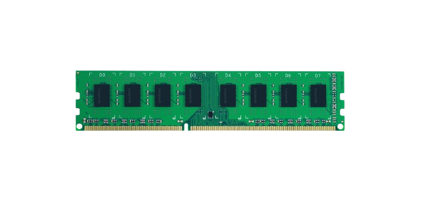
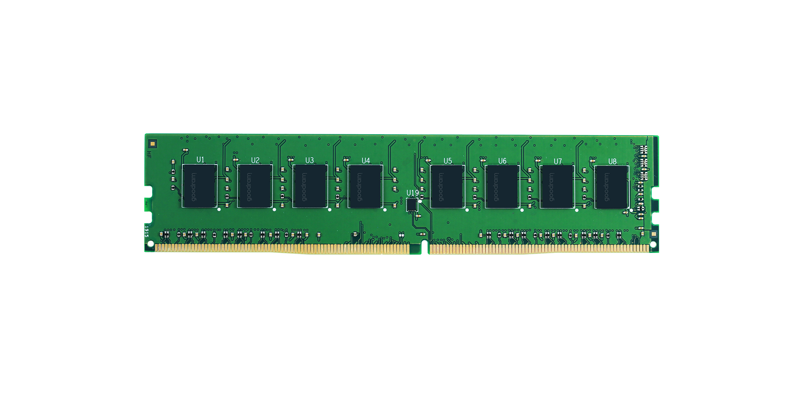

Ram är förkortning till (Random Acces Memory) Fungerar som ett datorminne som lagrar tillfälliga information som behövs för att köra program. Ramen är Flyktig vilket betyder att all data raderas när datorn stängs av. Hur många uppgifter din dator kan hantera samtidigt beror på hur mycket RAM det finns, Ju mer desto fler uppgifter kan det hantera utan att förlora prestanda.
Olika typer av RAM
DDR3:
Långsam och drar mycket ström. Används inte så mycket i vår tid, passar för äldre system.

DDR4:
Används mest idag och är mer energieffektivt.

DDR5:
Högre hastighet med lägre energiförbrukning vilket gör den dyrare och passar inte alla moderkort, Den kräver moderna moderkort.
Miljö:
Ram spelar en stor roll i datorns energiförbrukning, Nya modeller är med energieffektiva än äldre. Man ska bara köpa mängden Ram som ska användas inte överdrivet i så fall är det slöseri i både ekonomi och resurs.
Rekomendationer:
Kontor
8-16 GB Räcker
Gaming
Beror på vilket spel man ska spela, om det är inte så stor spel så räcker det med 16GB, men om spelet är så stort så behöver man 32GB för att få bättre prestanda i spel som kräver mycket resurser.
Tips!
Va säker att RAM-minnet passar ditt moderkort.
Det finns olika RAM märken men inte alla är bra, så det är bra om man väljer pålitliga så som Corsair eller kingston.